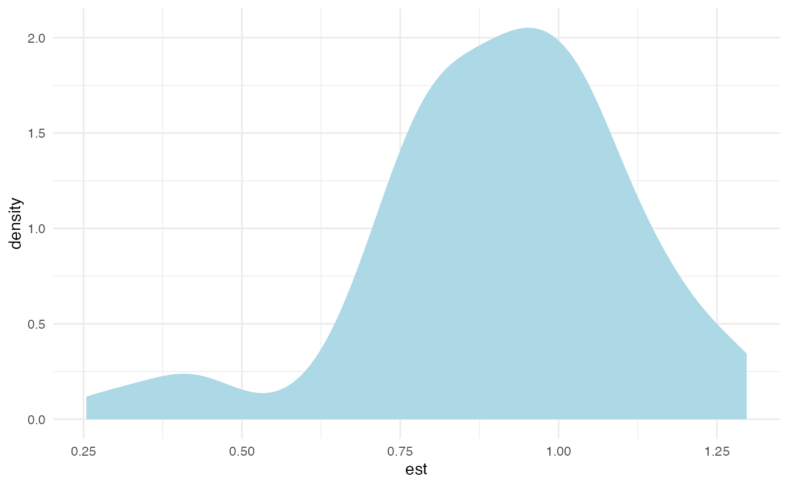
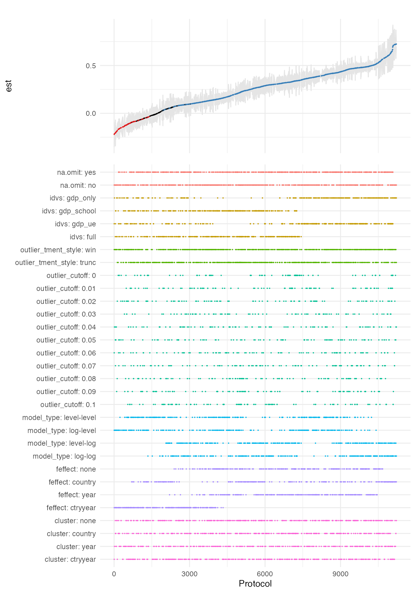
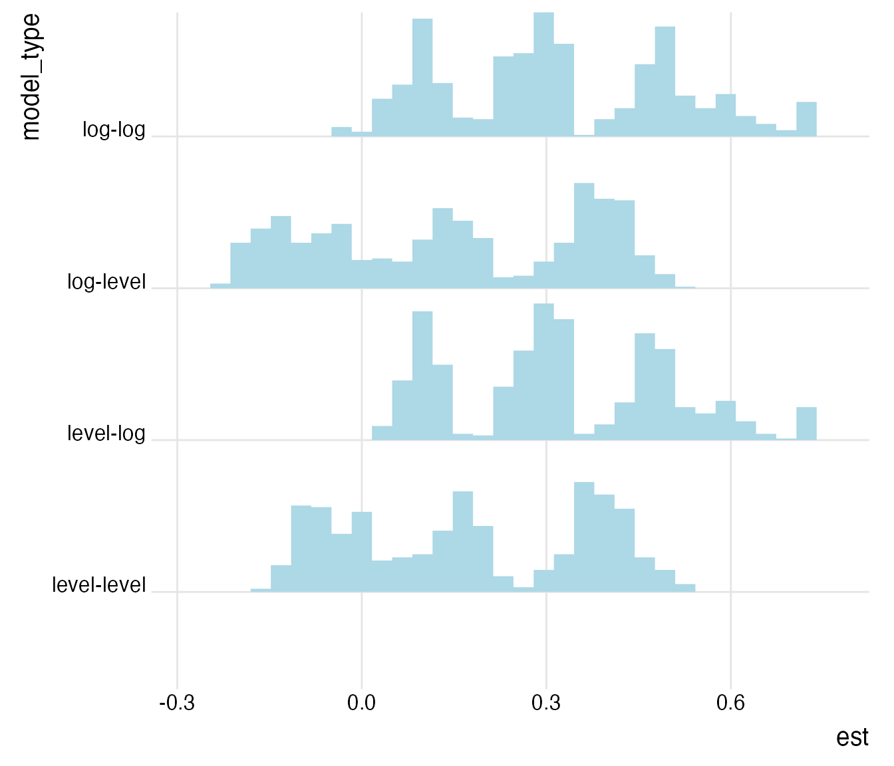
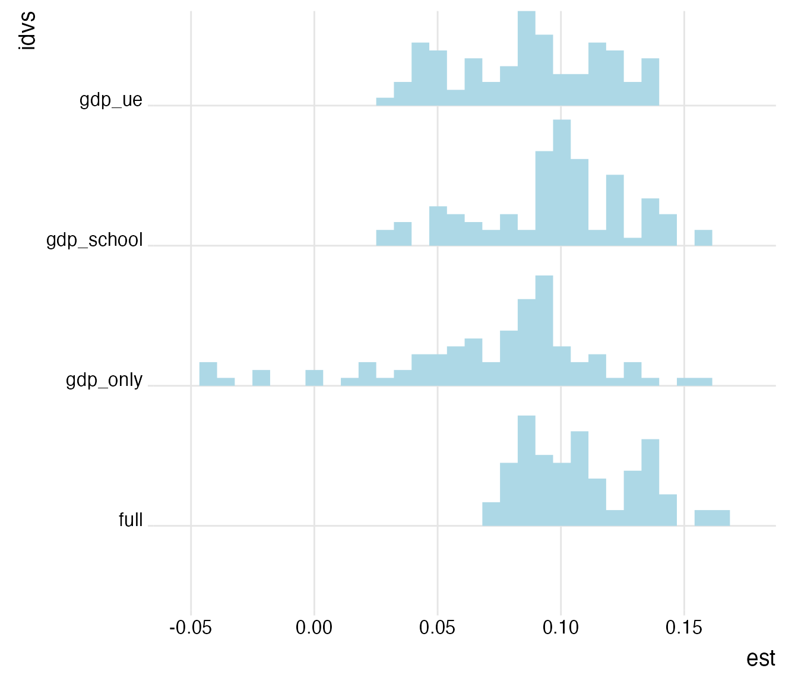
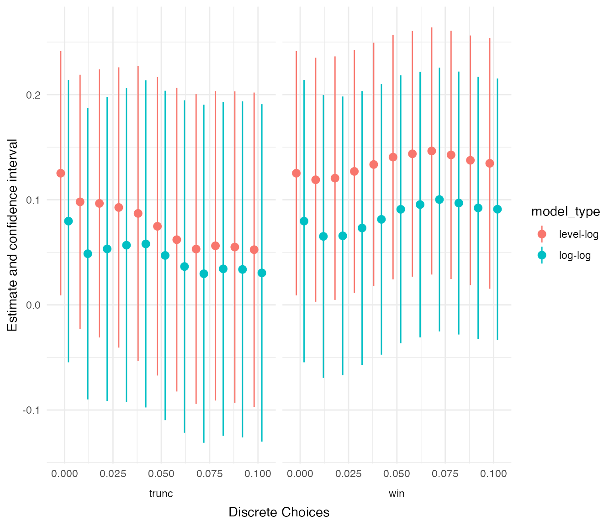

Analyzing Researcher Degrees of Freedom: A Case Study
Joachim Gassen
2023-02-12
Source:vignettes/analyzing_rdf.Rmd
analyzing_rdf.RmdIntroduction
The idea of the in-development rdfanalysis package is to
provide a coding environment that allows researchers to systematically
document and analyze the degrees of freedom in their research designs.
The notion “researcher degrees of freedom” has been introduced by Simmons
et al., (Psyc Science, 2011). In their own words (p. 1359):
The culprit is a construct we refer to as researcher degrees of freedom. In the course of collecting and analyzing data, researchers have many decisions to make: Should more data be collected? Should some observations be excluded? Which conditions should be combined and which ones compared? Which control variables should be considered? Should specific measures be combined or transformed or both?
This vignette will use a case to guide you through the process of how to use the package for an analysis that makes its inherent researcher degrees of freedom transparent. The outcome of this activity will be similar to the multiverse analysis approach suggested by Steeger et al. (Persp on Psych Sci 2016).
The Case
As case we assess the impact of real Gross Domestic Product (GDP) per capita on life expectancy. This association has become known as the Preston Curve (Preston, Pop Studies, 1975).

Preston (1975): The Changing Relation between Mortality and level of Economic Development, Population Studies (29): 235.
We will estimate the respective coefficient for GDP per capita in a multiple regression framework on a panel data set of country-year data provided by the World Bank (GDP per capita, life expectancy at birth and unemployment rates), and the Wittgenstein Center for mean years of schooling received by country inhabitants being 15 years or older. As the schooling data is available at 5 year intervals only, I interpolate the years in-between linearly to keep the data at annual frequency (another research degree of freedom, I know …). If you want to explore the data underlying the case, click here to access an interactive data exploration tool based on my ExPanDaR package. With this tool, you can also re-generate most protocols that we study below by hand.
While the analysis it not meant to contribute to the question whether there is a causal link between GDP per capita and life expectancy (see Lutz and Kebede, Pop and Dev Review 2018 for a recent discussion), I design the analysis such that identifying assumptions for such a causal interpretation of its findings are explicit.
Step 1: Define research design by a series of functions
Every research design can be implemented as a series of functions where each function receives the output of the previous function as a parameter and produces output for the next function.
In the terminology of the rdfanalysis package, each
function is called a “design step”. It comes with “choices” that can be
either discrete or continuous in nature. The choices are what generate
researcher degrees of freedom. A set of made choices across all steps of
a design constitutes a “research protocol”. The total number of feasible
research protocols equals the researcher degrees of freedom of a
research design.
In our case and in most designs, the first step reads or generates
data, and the last step generates results. In principle, the
rdfanalysis package is agnostic about the data structure
that constitutes a result. In most cases, the result will take the form
of one or several confidence intervals. In our case, it is the 95 %
confidence interval for the effect of a 10 % GDP per capita increase on
life expectancy in years, provided by three variables:
- the estimate (
est) - a lower bound (
lb) and - an upper bound (
ub).
To assess the impact of GDP per capita on life expectancy, our case design follows the following steps
- Read data
- Select independent variables for model
- Treat extreme observations
- Specify model
- Estimate model
Each step will be implemented by a function. To set up such a
functional structure, you use the command define_design().
This function creates a series of function templates in a directory of
your choice. Existing files are not over-written. You can choose whether
you want your functions all in one R file or whether you want to
generate separate files. I am going with separate files here.
Step 2: Implement design steps
When you take a look at the newly created directory, you will see a set of R files. Each file contains a template like this:
step_name <- function(input = NULL, choice = NULL) {
# This is a template for a design step
# to be used by the rdfanalysis package
# See https://joachim-gassen.github.io/rdfanalysis
# for further information on how to use this template
# and the package.
# Feel free to delete any/all lines containing comments but leave
# the line containing ("Analysis code starts below") unchanged.
# Provide your documentation in the two variables below.
# They will be used by prepare_design_documentation()
step_description <- c(
"## [Step Title]",
"### Content",
"",
"[Explain what the step does]"
)
choice_description <- c(
"### Choice",
"",
"`[name of discrete choice]`: A character value containing one of the",
"following values:",
"",
"- `[valid_value 1]`: [What this choice does]",
"- `[valid_value n]`: [What that choice does]",
"",
"`[name of continuous choice]`: [Explain valid range for continuous choice",
"and what it does]"
)
# Specify your valid choices below. Format will be checked by test_design()
# for consistency
choice_type <- list(
list(name = "[name of discrete choice]",
type = "character",
valid_values = c("[valid_value 1]", "[valid_value n]"),
# weights are not required but they need to add up to one if
# they are provided. Adjust the example below
weights = c(0.8, 0.2)),
list(name = "[name of continuous choice]",
type = "double",
valid_min = 0, valid_max = 0.1,
# weights for continuous choices are provided by a sample of choices.
# Could be just one value. Adjust the example below
weight_sample = c(0, rep(0.01, 4), rep(0.05, 4)))
)
# You should not need to change anything in the following code section
if (is.null(choice)) return(list(
step_description = step_description,
choice_description = choice_description,
choice_type = choice_type
)) else check_choice(choice, choice_type)
# Leave the following comment untouched. It is being used by
# prepare_design_documentation() to identify the part of the step
# that should be included in the documentation.
# ___ Analysis code starts below ___
# Here you need to add your code.
# If this is the first step of your design, you can access input data via the
# input parameter. If it is a subsequent step, you can access input data
# via input$data and the protocol leading to this step by input$protocol.
# Make sure that you address all choices identified above.
# In the return block below, you need to replace the placeholder with the
# variable that contains the data that you want to return as output
# to the next step or as a result if this is the last step.
return(list(
data = "[variable containing your output data structure here]",
protocol = list(choice)
))
}The task is now to implement the code for each step. To do so, you
should first set step_description and
choice_description. Each variable takes a vector of strings
that will be concatenated to R Markdown code to provide the code
documentation (see prepare_design_documentation() below).
Use these variables to explain what the step does and which choices it
contains.
Let’s apply this to our first design step read_data().
When we import the raw data, we can decide whether we require each
country-year observation to have non-missing data for all potential
variables. To implement this discrete choice, you document it in
choice_description and specify it in
choice_type. The weight parameter can be used
to provide the choice (or weighting of choices) that you a
priori assume to be supported by theory. The final function
read_data() is provided below. It simply reads a CSV file
containing data, limits the sample to the required variables and deletes
cases with missing data if the choice na.omit is set to
"yes".
read_data <- function(input = NULL, choice = NULL) {
step_description <- c(
"## Read data",
"### Content",
"",
"Reads country year world bank data CSV file and generates raw sample"
)
choice_description <- c(
"### Choice",
"",
"`na.omit`: A character value containing one of the",
"following values:",
"",
"- `yes`: All observations with missing data are excluded",
"- `no`: All observations with missing data are included"
)
choice_type <- list(
list(name = "na.omit",
type = "character",
valid_values = c("yes", "no"),
weights = c(1, 0))
)
if (is.null(choice)) return(list(
step_description = step_description,
choice_description = choice_description,
choice_type = choice_type
)) else check_choice(choice, choice_type)
# ___ Analysis code starts below ___
df <- read_csv(input, col_types = cols()) %>%
mutate_at(c("country", "year"), as.factor) %>%
select(country, year,
lifeexpectancy, gdp_capita,
mn_yrs_school, unemployment)
if(choice == "yes") df <- df %>%
na.omit()
return(list(
data = df,
protocol = list(choice)
))
}For the other steps you follow the same approach. For our case study, I implement the following choices:
-
select_idvs(): selects the independent variables that we want to include in our regression model.idvsnames these variables. -
treat_extreme_obs(): treats extreme observations that otherwise tend to be highly influential for regression outcomes.outlier_tment_styleindicates whether you want to use truncating or winsorizing.outlier_cutoffholds the percentile cutoff. It can be within the range [0, 0.1] (0 to 10 %, with 0 indicating no outlier treatment). -
specify_model(): provides the specification of the regression model.model_typedetermines whether the model will be estimated as level-level, log-level, level-log or log-log specification. -
est_model(): estimates the main effect of interest. To make the estimates comparable across different model specifications model coefficients are transformed so that each estimates the life expectancy effect in years of a 10 % increase in GDP per capita. The choicefeffectsdetermines which fixed effects are used (none, country, year or both) andclusterindicates how the standard errors should be clustered (not, by country, by year, or two-way by country and year).
All these choices are rather standard choices in research designs based on observational data. Taken together and assuming that you want to generate outlier cases for each percentile from 0 to 10, they generate \(2 * 4 * 2 * 11 * 4 * 4 * 4 = 11,264\) researcher degrees of freedom!
Below you find all four functions. Copy and paste them into the template files to generate your research design.
select_idvs <- function(input = NULL, choice = NULL) {
step_description <- c(
"## Identify the variables for analysis",
"### Content",
"",
"Select the variables that you want to use in the regression analysis."
)
choice_description <- c(
"### Choice",
"",
"`idvs`: A character value containing one of the",
"following values:",
"",
"- `gdp_only`: GDP per capita only",
"- `gdp_school`: GDP per capita and mean years schooling",
"- `gdp_ue`: GDP per capita and unemployment",
"- `full`: Full model including all three variables"
)
choice_type <- list(
list(name = "idvs",
type = "character",
valid_values = c("gdp_only", "gdp_school", "gdp_ue", "full"),
weights = c(0, 0, 0, 1))
)
if (is.null(choice)) return(list(
step_description = step_description,
choice_description = choice_description,
choice_type = choice_type
)) else check_choice(choice, choice_type)
# ___ Analysis code starts below ___
df <- switch (choice[[1]],
"gdp_only" = input$data %>% select(-mn_yrs_school, -unemployment),
"gdp_school" = input$data %>% select(-unemployment),
"gdp_ue" = input$data %>% select(-mn_yrs_school),
"full" = input$data
)
protocol <- input$protocol
protocol[[length(protocol) + 1]] <- choice
return(list(
data = df,
protocol = protocol
))
}
treat_extreme_obs <- function(input = NULL, choice = NULL) {
step_description <- c(
"## Select the type of outlier treatment",
"### Content",
"",
"Select how you want to treat extreme observations. They can be winsorized or truncated",
"to a given percentile of the data."
)
choice_description <- c(
"### Choice",
"",
"A list containing a character value `outlier_tment_style` and a numerical value `outlier_cutoff`.",
"`outlier_tment_style` may take one of the following values:",
"",
"- `win`: Winsorization",
"- `trunc`: Truncation",
"",
"`outlier_cutoff` sets the cut-off percentile for the outlier treatment",
"and may take any value within [0, 0.10]"
)
choice_type <- list(
list(name = "outlier_tment_style",
type = "character",
valid_values = c("win", "trunc"),
weights = c(0.5, 0.5)),
list(name = "outlier_cutoff",
type = "double",
valid_min = 0, valid_max = 0.1,
weight_sample = c(0, 0, rep(0.01, 4), rep(0.05, 4)))
)
if (is.null(choice)) return(list(
step_description = step_description,
choice_description = choice_description,
choice_type = choice_type
)) else check_choice(choice, choice_type)
# ___ Analysis code starts below ___
if (choice[[2]] == 0) {
protocol <- input$protocol
protocol[[length(protocol) + 1]] <- choice
return(list(
data = input$data,
protocol = protocol
))
}
switch(choice[[1]],
"win" = {
df <- input$data
df[, 3:ncol(df)] <-
treat_outliers(df[, 3:ncol(df)], percentile = choice[[2]])
df
},
"trunc" = {
df <- input$data
df[, 3:ncol(df)] <-
treat_outliers(df[, 3:ncol(df)],
percentile = choice[[2]],
truncate = TRUE)
df
})
protocol <- input$protocol
protocol[[length(protocol) + 1]] <- choice
return(list(
data = df,
protocol = protocol
))
}
specify_model <- function(input = NULL, choice = NULL) {
step_description <- c(
"## Specify the model type to be estimated",
"### Content",
"",
"Specify whether you want to estimate a level model or whether you",
"want to use log tansformed dependent and/or independent variables."
)
choice_description <- c(
"### Choice",
"",
"`model_type`: A character value containing one of the",
"following values:",
"",
"- `level-level`: Use untransformed dependent and independent variables",
"- `log-level`: Use log-transformed dependent and",
"untransformed independent variables",
"- `level-log`: Use untransformed dependent and",
"log-transformed independent variables",
"- `log-log`: Use log-transformed dependent and independent variables"
)
choice_type <- list(
list(name = "model_type",
type = "character",
valid_values = c("level-level", "log-level",
"level-log", "log-log"),
weights = c(0, 0, 0.5, 0.5))
)
if (is.null(choice)) return(list(
step_description = step_description,
choice_description = choice_description,
choice_type = choice_type
)) else check_choice(choice, choice_type)
# ___ Analysis code starts below ___
df <- input$data
if (choice == "log-level" | choice == "log-log")
df$lifeexpectancy <- log(df$lifeexpectancy)
if (choice == "level-log" | choice == "log-log")
df[,4:ncol(df)] <- log(df[,4:ncol(df)])
protocol <- input$protocol
protocol[[length(protocol) + 1]] <- choice
return(list(
data = df,
protocol = protocol
))
}
est_model <- function(input = NULL, choice = NULL) {
step_description <- c(
"## Estimates the model",
"### Content",
"",
"Uses a multiple regression setup to generate an estimate and",
"a confidence interval for the effect of a 10 % increase in GDP per capita",
"on life expectancy in years."
)
choice_description <- c(
"### Choice",
"",
"A list containing two character values: `cluster` and `feffect`.",
"`cluster` defines the clustering of standard errors and",
"`feffect` defines the fixed effect structure of the model.",
"Each value may take one of the following values:",
"",
"- `none`, `ctry`, `year` or `ctryyear`"
)
choice_type <- list(
list(name = "feffect",
type = "character",
valid_values = c("none", "country", "year", "ctryyear"),
weights = c(0, 0, 0, 1)),
list(name = "cluster",
type = "character",
valid_values = c("none", "country", "year", "ctryyear"),
weights = c(0, 0, 0, 1))
)
if (is.null(choice)) return(list(
step_description = step_description,
choice_description = choice_description,
choice_type = choice_type
)) else check_choice(choice, choice_type)
# ___ Analysis code starts below ___
f <- paste0("lifeexpectancy ~ ",
paste(colnames(input$data)[4:length(input$data)], collapse = " + "))
if (choice[[1]] == "country" || choice[[1]] == "year") f <- paste0(f, "| ", choice[[1]])
else if (choice[[1]] == "ctryyear") f <- paste0(f, " | country + year")
if (choice[[2]] == "none") form <- as.formula(f)
else if (choice[[1]] == "none") f <- paste0(f, " | 0 ")
if (choice[[2]] == "country" || choice[[2]] == "year") f <- paste0(f, "| 0 | ", choice[[2]])
else f <- paste0(f, "| 0 | country + year ")
if (choice[[2]] != "none") form <- as.formula(f)
mod <- lfe::felm(form, input$data)
protocol <- input$protocol
if (protocol[[4]][[1]] == "level-level")
mult <- log(1.1)*mean(input$data$gdp_capita, na.rm = TRUE)
else if (protocol[[4]][[1]] == "level-log")
mult <- log(1.1)
else if (protocol[[4]][[1]] == "log-level")
mult <- log(1.1)*mean(input$data$gdp_capita, na.rm = TRUE) *
mean(exp(input$data$lifeexpectancy), na.rm = TRUE)
else mult <- log(1.1)*mean(exp(input$data$lifeexpectancy), na.rm = TRUE)
l <- list(
est = mod$coefficients[row.names(mod$coefficients) == 'gdp_capita'] * mult,
lb = confint(mod)[row.names(mod$coefficients) == 'gdp_capita', 1] * mult,
ub = confint(mod)[row.names(mod$coefficients) == 'gdp_capita', 2] * mult
)
protocol[[length(protocol) + 1]] <- choice
return(list(
data = l,
protocol = protocol,
model = mod
))
}Step 3: Source, test and document design
After implementing the design, you need to source it. In addition, you can test the design code for input parameter consistency at this stage. This test will verify that each step provides a step description, a choice description and the valid choice types to the user when called without input parameter. If weights are provided, the test verifies that the weights add up to one and are within the valid choice range.
source_design(design, rel_dir = "case_study_code")
test_design(design, reporter = "minimal")
#> ...............................................................................................................................................The test does not complain. Next, the command
prepare_design_documentation() produces a PDF document
based on the step_description and
choice_description that you provided for each step. By
default, it also includes the “pay load” code for each design step.
In addition, the command prepare_design_flow_chart()
produces a visualization of your design steps and of their choices.
prepare_design_documentation(design, "preston_curve_design.pdf")
prepare_design_flow_chart(design)Step 4 (optional but encouraged): Simulate data for additional testing and power analysis
While not strictly necessary, a very useful next step is to simulate your raw data. Simulating your data early in the project can be very helpful for various reasons:
- It allows you to test your design steps without requiring you to work with your real data, which would strictly speaking constitute a breach of the “don’t mix exploration with inference” rule.
- You can simulate your expected effect and verify that your design identifies it correctly.
- You can assess the power of your design.
To demonstrate these steps, I use a very quick’n’dirty simulation approach. It creates a country year panel and simulates data that are roughly comparable to real data. It uses the following level-log setup:
\(lifeexpectancy = \beta_0 + \frac{es}{\log(1.1)}\log(gdp\_capita) + 10\log(mn\_yrs\_school) + 5log(unemployment) + \epsilon\)
with \(\beta_0\) being based on
country-level base-lines that are adjusted for sample means of the
independent variables. The effect es of a 10 % increase of
log(gdp_capita) on lifeexpectancy in years is
our main variable of interest. Like the read_data()
function, sim_data() returns a path to a temporary CSV file
containing the simulated data.
sim_data <- function(countries = 75, es = 1, years = 15) {
n <- countries * years
df <- expand.grid(country = as.factor(1:countries),
year = as.ordered((2016 - years + 1):2016))
mm_gdp_capita <- 18000
sd_gdp_capita <- 20000
location <- log(mm_gdp_capita^2 / sqrt(sd_gdp_capita^2 + mm_gdp_capita^2))
shape <- sqrt(log(1 + (sd_gdp_capita^2 / mm_gdp_capita^2)))
base_gdp_capita <- rlnorm(countries, location, shape)
base_unemp <- rbeta(countries, 2, 20)*100
base_mn_yrs_school <- pmax(pmin(rnorm(countries, 4, 2), 13), 1)
base_le <- rnorm(countries, 70, 10)
base_le[base_le > 70] <- 70 + 0.6 * (base_le[base_le > 70] - 70)
for (yr in (2016 - years + 1):2016) {
if (yr == 2016 - years + 1) df$gdp_capita[df$year == yr] <- base_gdp_capita
else df$gdp_capita[df$year == yr] <- pmax(df$gdp_capita[df$year == yr - 1] +
rnorm(countries, 0, 0.01 * sd_gdp_capita), 100) *
(1 + rnorm(countries, 0.02, 0.02))
}
df$mn_yrs_school <- pmax(rep(base_mn_yrs_school, years) +
0.1 * (log(df$gdp_capita) - mean(log(df$gdp_capita))) +
rnorm(n, 0.5, 0.3), 1)
df$unemployment <- pmax(rep(base_unemp, years) -
0.2 * (log(df$gdp_capita) -
mean(log(df$gdp_capita))) +
rnorm(n, 0.2, 0.2), 0.0001)
df$lifeexpectancy <- rep(base_le, years) -
10 * mean(log(df$mn_yrs_school)) +
5 * mean(log(df$unemployment)) -
(es/log(1.1)) * mean(log(df$gdp_capita)) +
10 * log(df$mn_yrs_school) -
5 * log(df$unemployment) +
(es/log(1.1)) * log(df$gdp_capita) +
rnorm(n, 0, 5)
df$lifeexpectancy <- pmax(df$lifeexpectancy, 30)
df <- df[, c("country", "year", "lifeexpectancy",
"gdp_capita", "mn_yrs_school", "unemployment")]
tfile <- tempfile("simdata", fileext = c(".csv"))
write_csv(df, tfile)
tfile
}Using this code we can now test whether our design steps are able to process the data. This tests whether based on our simulated data each step is able to run with each feasible choice, producing output and creating no warnings or errors.
test_design(design, input = sim_data(), reporter = "minimal")
#> ...............................................................................................................................................................................................................................................................................................This looks good. Now let’s see whether the design generates an effect estimate that is consistent with the effect of 1 year that we simulated. For that, we pick the protocol that is consistent with the simulation, meaning that
- We use the full model since
sim_data()incorporated effects ofunemploymentandmn_yrs_school, - we do not treat outliers,
- we use the level-log model specification,
- and we include country and year fixed effects and also cluster our standard errors by country and year.
We use the function simulate_design_power() for this
step. This function runs a provided protocol on simulated data, with
specified sample and effect size. The sample size is given in
cross-sectional units here. The function returns a data frame containing
the results for each simulation run. The density of the point estimates
allows us to assess the consistency of our design.
power_df <-
simulate_design_power(design,
protocol = list(na_omit = "no",
idvs = "full",
list(
outlier_tment_style = "win",
outlier_cutoff = 0
),
model_type = "level-log",
list(
fecffect = "ctryyear",
cluster = "ctryyear"
)),
input_sim_func = sim_data,
range_n = 150,
effect_size = 1)
ggplot(power_df, aes(x = est)) +
geom_density(color = NA, fill = "lightblue") +
theme_minimal()
This looks OK. Now: How about the power? We continue to assume that a 10% increase in GDP per capita increases life expectancy by a year. How likely is that we will be able observe this effect in the data? Let’s see whether we have enough power to detect such an effect.
power_df <-
simulate_design_power(design,
protocol = list(na_omit = "no",
idvs = "full",
list(
outlier_tment_style = "win",
outlier_cutoff = 0
),
model_type = "level-log",
list(
fecffect = "ctryyear",
cluster = "ctryyear"
)),
input_sim_func = sim_data,
range_n = seq(10, 100, 10),
effect_size = 1)
ggplot(power_df, aes(x = n, y = est)) +
geom_point(color = "lightblue", position = position_dodge(width = 0.5)) +
theme_minimal()
As n, the number of cross-sectional units (countries) in
our simulation, increases, the distribution of our point estimates for
our simulated effect narrows and centers on the simulated effect size of
one year. This is good. What is the number of countries that are needed,
assuming 15 observations per country, to reach a power of \(0.8\)?
power_df %>%
na.omit() %>%
group_by(n) %>%
summarize(power = sum(lb > 0)/n()) %>%
ggplot(aes(x = n, y = power)) + geom_line(color = "lightblue", size = 2) +
theme_minimal()
Roughly 40 countries, yielding 600 observations. The world bank data will have more observations than that. So, power will not be an issue in our analysis, at least not if the effect size is comparable to the one we assumed.
We have now verified that our design is capable to identify a simulated effect without bias and with sufficient power. Time to run it on real data.
Step 5: Estimate effect
As we provided weights for each design step choice, we can now
estimate the effect by applying these weights on our design. This is
done by first running exhaust_design(..., weight = TRUE) on
the actual data and by then using the returned protocol estimates from
this function call as input to
calculate_weighted_estimate().
weighted_ests <- exhaust_design(design, "https://joachim-gassen.github.io/data/wb_new.csv",
weight = TRUE)
weighted_eff <- calculate_weighted_estimate(weighted_ests, "est", "lb", "ub")
kable(as.data.frame(weighted_eff), digits = 3)| est | lb | ub | n |
|---|---|---|---|
| 0.112 | 0.029 | 0.195 | 12 |
The estimated weighted effect size of 0.112 is much smaller than our simulated effect of one year. We can also assess the results for each of the twelve protocols with non-zero weights.
kable(weighted_ests, digits = 3)| na.omit | idvs | outlier_tment_style | outlier_cutoff | model_type | feffect | cluster | weight | est | lb | ub |
|---|---|---|---|---|---|---|---|---|---|---|
| yes | full | win | 0.00 | level-log | ctryyear | ctryyear | 0.05 | 0.136 | 0.044 | 0.228 |
| yes | full | trunc | 0.00 | level-log | ctryyear | ctryyear | 0.05 | 0.136 | 0.044 | 0.228 |
| yes | full | win | 0.01 | level-log | ctryyear | ctryyear | 0.10 | 0.118 | 0.039 | 0.198 |
| yes | full | trunc | 0.01 | level-log | ctryyear | ctryyear | 0.10 | 0.104 | 0.034 | 0.175 |
| yes | full | win | 0.05 | level-log | ctryyear | ctryyear | 0.10 | 0.095 | 0.022 | 0.169 |
| yes | full | trunc | 0.05 | level-log | ctryyear | ctryyear | 0.10 | 0.079 | 0.005 | 0.154 |
| yes | full | win | 0.00 | log-log | ctryyear | ctryyear | 0.05 | 0.164 | 0.050 | 0.277 |
| yes | full | trunc | 0.00 | log-log | ctryyear | ctryyear | 0.05 | 0.164 | 0.050 | 0.277 |
| yes | full | win | 0.01 | log-log | ctryyear | ctryyear | 0.10 | 0.135 | 0.044 | 0.226 |
| yes | full | trunc | 0.01 | log-log | ctryyear | ctryyear | 0.10 | 0.116 | 0.041 | 0.192 |
| yes | full | win | 0.05 | log-log | ctryyear | ctryyear | 0.10 | 0.093 | 0.010 | 0.176 |
| yes | full | trunc | 0.05 | log-log | ctryyear | ctryyear | 0.10 | 0.083 | 0.006 | 0.161 |
The protocol estimates are significant at the conventional 95 % level for all twelve protocols. You can also run a single protocol to analyze its full model results.
res <-
read_data("https://joachim-gassen.github.io/data/wb_new.csv", "yes") %>%
select_idvs("full") %>%
treat_extreme_obs(list("win", 0.01)) %>%
specify_model("level-log") %>%
est_model(list("ctryyear", "ctryyear"))
summary(res$model)
#>
#> Call:
#> lfe::felm(formula = form, data = input$data)
#>
#> Residuals:
#> Min 1Q Median 3Q Max
#> -7.3006 -0.6092 0.0612 0.6129 10.8838
#>
#> Coefficients:
#> Estimate Cluster s.e. t value Pr(>|t|)
#> gdp_capita 1.2410 0.4051 3.063 0.00534 **
#> mn_yrs_school 7.4985 1.2991 5.772 5.98e-06 ***
#> unemployment -0.1483 0.3381 -0.439 0.66482
#> ---
#> Signif. codes: 0 '***' 0.001 '**' 0.01 '*' 0.05 '.' 0.1 ' ' 1
#>
#> Residual standard error: 1.567 on 3798 degrees of freedom
#> Multiple R-squared(full model): 0.9751 Adjusted R-squared: 0.9738
#> Multiple R-squared(proj model): 0.128 Adjusted R-squared: 0.08228
#> F-statistic(full model, *iid*):748.9 on 199 and 3798 DF, p-value: < 2.2e-16
#> F-statistic(proj model): 14.47 on 3 and 24 DF, p-value: 1.373e-05Note that, while the implemented design returns an estimate of the life expectancy effect in years of a 10 % increase in GDP per capita, the documented model estimates of a level-log specification have to be transformed to produce that estimate. Based on the selected model, a 10 % increase in GDP per capita would be associated with \(1.241 \log(1.1) \approx 0.118\) years change in life expectancy. Overall, one can conclude that the additional explanatory power of our independent variables in explaining life expectancy is modest once one allows for country and year fixed effects. Consistent with Lutz and Kebede (2018), we find a pronounced and significant association of schooling with life expectancy, but due to potential reverse causality issues I would be hesitant to argue causality here.
How robust is our weighted effect estimate across our documented researcher degrees of freedom? Time to exhaust our design across all available design choices.
Step 6: Assess robustness of effect
We will now exhaust all design choices and estimate our effect for each feasible protocol. As these combine to 11,264 protocols, running the code below will take a while. This is why we load the data that is generated by the commented lines from the disk.
# ests <- exhaust_design(design,
# "https://joachim-gassen.github.io/data/wb_new.csv")
# save(ests, file = "case_study_ests.RData")
load("case_study_ests.RData")Let’s see how the estimates distribute across our researcher degrees of freedom.
plot_rdf_estimate_density(ests, "est", "lb", "ub", color = "lightblue") +
theme_minimal()
Quite a range of estimates. How do the coefficients vary by model
specification?
For a quick overview the package has implemented the specification curve
visual as suggested by Simonsohn,
Simmons and Nelson.
plot_rdf_spec_curve(ests, "est", "lb", "ub", sample_frac = 0.1) 
This visual is based on a 10 % sample of estimates (can be adjusted
via the sample_frac parameter). It provides a very good
first impression of both, the overall distribution of the main estimate
of interest as well as influential choices.
For example, you see that the type of the estimation model is
influential for the magnitude of the effect. To be able to assess the
precise range of our estimates conditional on this discrete choice, we
now use the plot_rdf_by_dchoice() function with
histogram-based ridge lines instead of densities.
plot_rdf_ridges_by_dchoice(ests, "est", "model_type", hist = TRUE, scale = 0.9, fill = "lightblue", color = NA)
In line with the overall shape of the Preston curve, the specifications with untransformed (level) independent variables generate estimates closer to zero than the ones with log-transformed independent variables. For the following, we will concentrate on the specifications with log-transformed independent variables that we hypothesized.
log_ests <- ests %>%
filter(model_type == "level-log" | model_type == "log-log")
plot_rdf_ridges_by_dchoice(log_ests, "est", "feffect", hist = TRUE, scale = 0.9, fill = "lightblue", color = NA)
The influence of the applied fixed effect structure on the coefficient of interest is striking. A set of country and year fixed effects controls for unobserved time-invariant cross-sectional heterogeneity and for unobserved cross-sectionally-invariant time trends. The former can be explained by, e.g., regional determinants like climate influencing life expectancy and the latter by developments in medical services and other social aspects that materialize across time and are constant across countries. As both are likely to be influential on theoretical grounds, we limit the analysis now on protocols that employ country and firm fixed effects and that use log-transformed independent variables. Also, we limit the analysis to models that estimate confidence intervals based on two-way clustered standard errors.
rel_ests <- log_ests %>%
filter(feffect == "ctryyear" &
cluster == "ctryyear")
plot_rdf_ridges_by_dchoice(rel_ests, "est", "idvs", hist = TRUE, scale = 0.9, fill = "lightblue", color = NA)
Hmm… While most of the protocols generate an estimate roughly in the range of 0.05 to 0.15 years, some of the univariate estimates are smaller and even below zero. Let’s focus on them for a second and see whether they are driven by sample selection.
rel_ests %>%
filter(idvs == "gdp_only") %>%
plot_rdf_ridges_by_dchoice("est", "na.omit", hist = TRUE, scale = 0.9, fill = "lightblue", color = NA)
Yes, this seems to be the case. When assessed univariately on the largest possible sample, the range of estimates becomes considerably larger. Is this driven by extreme observations?
rel_ests %>%
filter(idvs == "gdp_only",
na.omit == "no") %>%
plot_rdf_estimates_by_choice("est", "lb", "ub", "outlier_tment_style",
color = "model_type", order = "outlier_cutoff", width = 0.008)
This seems to be the case. In general, the stricter the outlier treatment, the larger the estimate. In addition, the univariate level-log specifications are generating larger and slightly narrower estimates compared to the univariate log-log specification, consistent with a percentage increase in GDP rather being associated with an absolute increase in life expectancy than a relative one. This seems reasonable because of diminishing rates of returns to wealth.
Our last test will focus on the multivariate analyses that just use schooling as additional control, since including unemployment reduces the sample size while contributing little to the explanatory power of the model.
rel_ests %>%
filter(na.omit == "no",
idvs == "gdp_school") %>%
plot_rdf_estimates_by_choice("est", "lb", "ub", "outlier_tment_style",
color = "model_type", order = "outlier_cutoff", width = 0.008)
Again, outliers turn out to be influential here but into the opposite direction. Focusing on the narrower estimates of the level-log specification, it becomes apparent that removing outliers by truncating renders the estimate smaller and insignificant, while winsorizing extreme values does little to the coefficient.
Summing up
Using the rdfanalysis package, we are able to
systematically explore the 11,264 degrees of freedom that we identified
in a supposedly straight-forward panel data analysis of observational
data.
Allowing for time-invariant country-level unobservables and country-invariant unobservables affecting the time-series and controlling for unemployment and years of schooling, we estimate the effect of a 10 % increase of GDP per capita on life expectancy to be in the area of 0.03 to 0.2 years. Assuming that no other unobservables or reverse causality issues affect our findings, this coefficient could be interpreted as causal, but given how courageous these assumptions are I strongly advise against it.
As can be assessed by the researcher degrees of freedom exploration, our estimate is only one of many feasible estimates. The total range of estimates spans from a lower bound of -0.35 to an upper bound of 0.92 years. Three observations stand out from the exploration:
- The country-year fixed effect structure has a large dampening effect on the estimates.
- Using log-transformed values for the independent variables generally increases the estimates.
- The implicit sample selection caused by including additional control variables is also influential for our estimate and tends to increase it.
It is impressive to see the number of researcher degrees of freedom
that even such a simple research design like the one at hand implies. My
hope is that the rdfanalysis package might motivate
researchers to think more deeply about their choice set and to explore
and document their findings more transparently.
If you have remarks about this vignette or the package, I would love to hear from you. Feel free to reach out via email or twitter.
Enjoy!
Appendix
Below you find the code to run the data in the ExPanD shiny web app for extensive interactive exploration. You can re-generate most protocols from above and more. An online version is accessible here.
library(tidyverse)
library(ExPanDaR)
df_all <- read_csv("https://joachim-gassen.github.io/data/wb_new.csv", col_types = cols()) %>%
mutate_at(c("country", "year"), as.factor) %>%
mutate_at(c("lifeexpectancy", "gdp_capita",
"mn_yrs_school", "unemployment"), list(ln = log)) %>%
select(country, region, year,
gdp_capita, lifeexpectancy,
mn_yrs_school, unemployment,
gdp_capita_ln, lifeexpectancy_ln,
mn_yrs_school_ln, unemployment_ln)
df_na.omit <- df_all %>% na.omit
wb_var_def <- worldbank_var_def %>%
slice(c(1,2,4,8,23,19)) %>%
left_join(worldbank_data_def, by = c("var_def" = "var_name")) %>%
select(-var_def) %>%
rename(var_def = var_def.y,
type = type.x) %>%
select(var_name, var_def, type, can_be_na) %>%
add_row(var_name = "mn_yrs_school", var_def = "Mean number of years spent in school, age group 15+. Source: Wittgenstein Centre for Demography and Global Human Capital (2018). Wittgenstein Centre Data Explorer Version 2.0. Data between five year intervals are based on linear interpolation.",
type = "numeric", can_be_na = 1, .after = 5)
for (var in c("gdp_capita", "lifeexpectancy", "mn_yrs_school", "unemployment")) {
wb_var_def <- rbind(wb_var_def,
list(paste0(var, "_ln"), paste("Log-transformed version of", var), "numeric", 1))
}
abstract <- paste("<p> </p><p>This interactive display is part of the ",
"<a href=https://joachim-gassen.github.io/rdfanalysis>",
"R package rdfanalysis</a>.",
"The package provides researchers with a coding framework",
"that supports formal documentation and systematic",
"exploration of the researcher degrees of freedom that are",
"inherent in research designs.</p>",
"<p>Data is provided by the World Bank and the Wittgenstein",
"Centre and used to assess the impact of real",
"gross domestic product (GDP) per capita on life expectancy.",
"This association has become known as the Preston Curve.<p>",
"You can choose below whether you want to examine a sample",
"with or without missing observations. Hover over the",
"variable names in the descriptive table to see variable",
"definitions and use the various displays to explore the",
"data.<p>",
"Joachim Gassen - <a href=mailto:gassen@wiwi.hu-berlin.de>",
"gassen@wiwi.hu-berlin.de</a> - March 2019")
ExPanD(list(df_all, df_na.omit),
df_name = c("All observations", "Observations with NAs omitted"),
df_def = wb_var_def,
title = "Explore the Link Between National Income and Life Expectancy (Preston Curve)",
abstract = abstract)